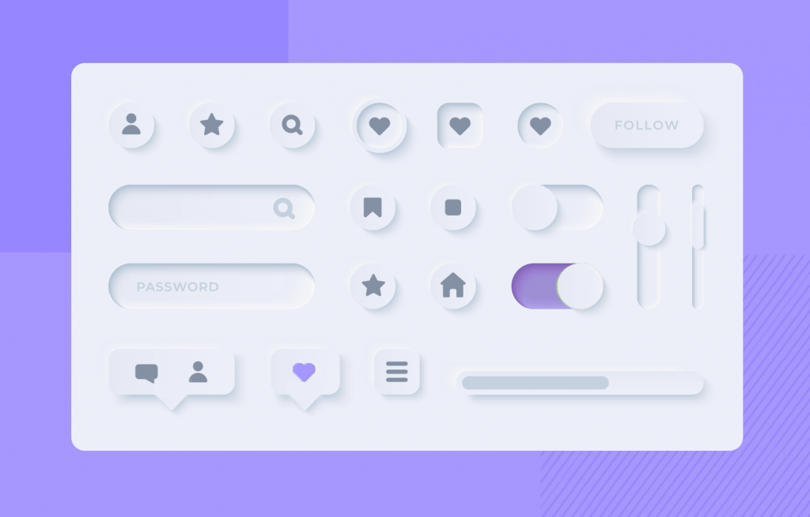
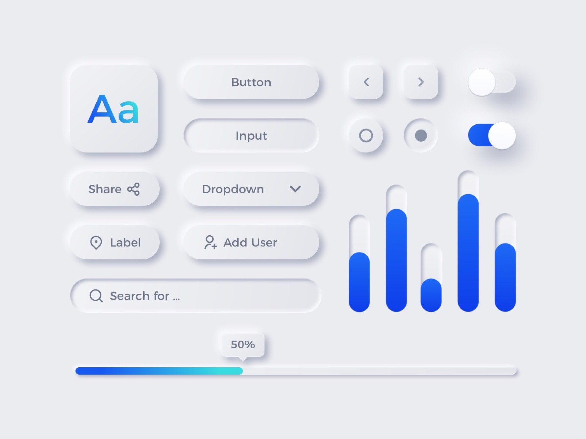

Temporary Neumorphism Page
Neumorphism was a trend in 2019-2021 where you would use a box that seems to pop out of the page or even indented into the page using 2 box
shadows, one to show the light onto the box, and one for the shadow.
The only major reason this isnt used today is for accessibility, and even if it IS used, it should only be for interactive buttons, since neumorphic boxes seem more interactive than others
The only major reason this isnt used today is for accessibility, and even if it IS used, it should only be for interactive buttons, since neumorphic boxes seem more interactive than others
By Mojimomo and William Tapp

By Justinmind.com

By MazePizel on Dribbble